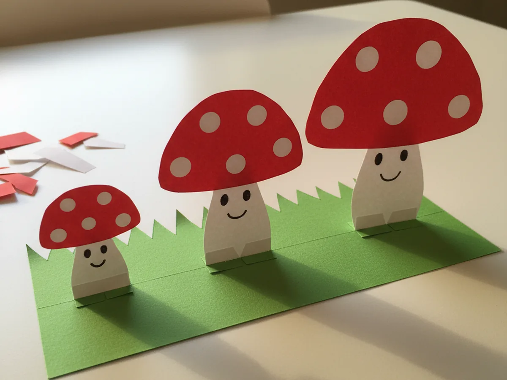
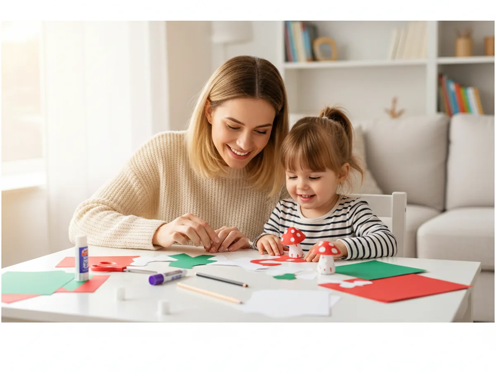
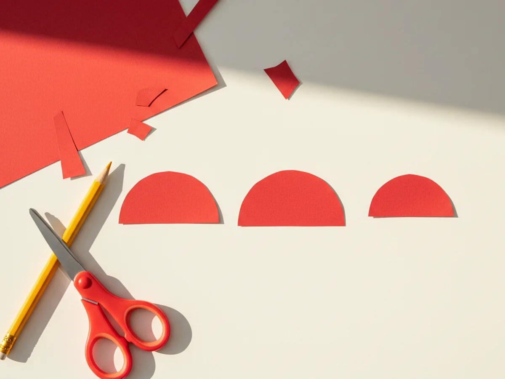
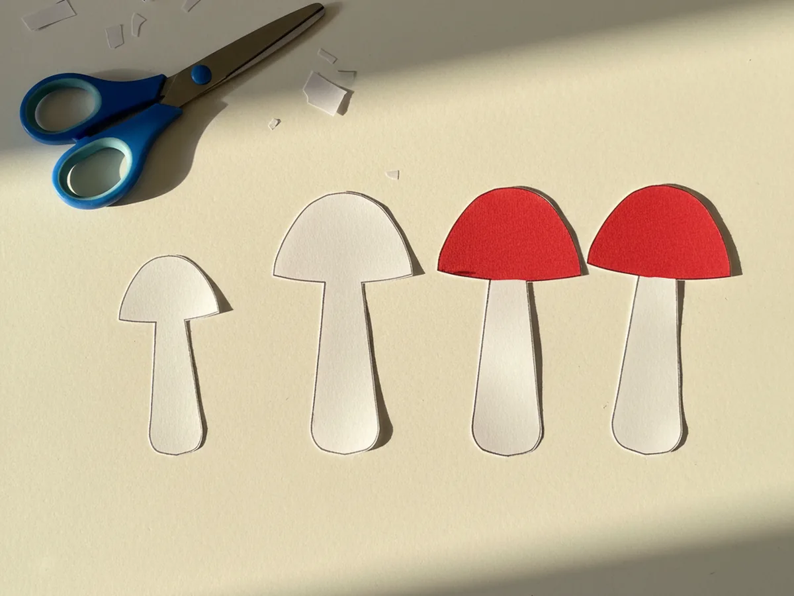
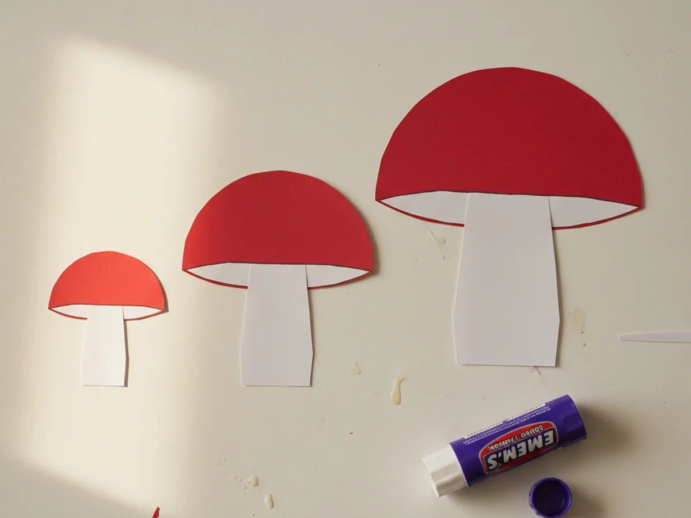
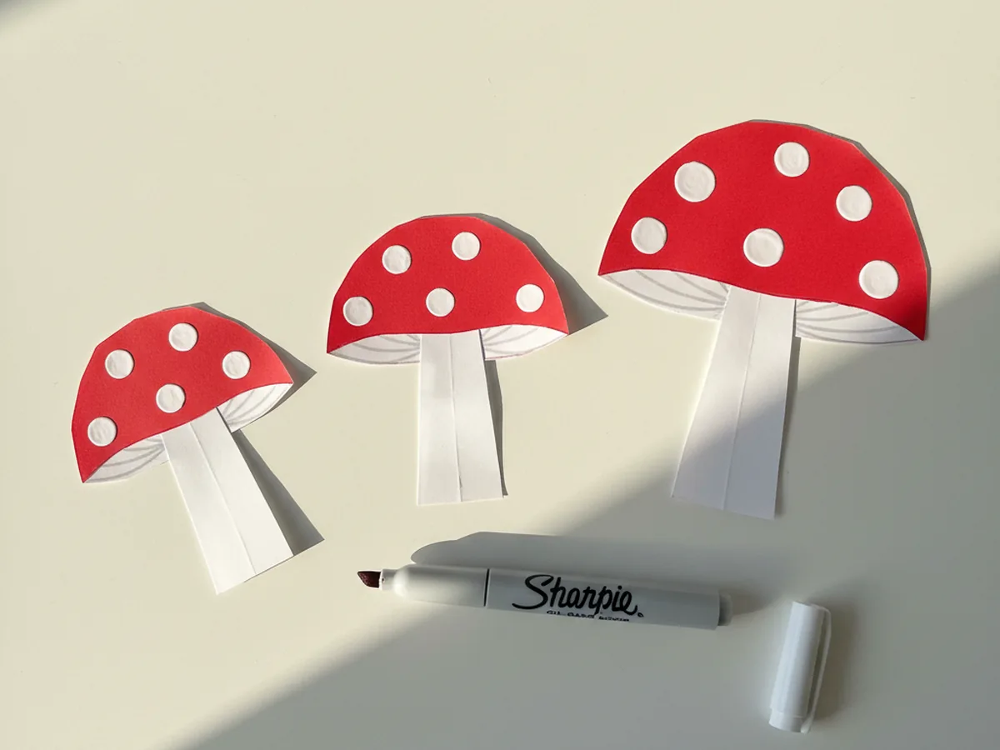
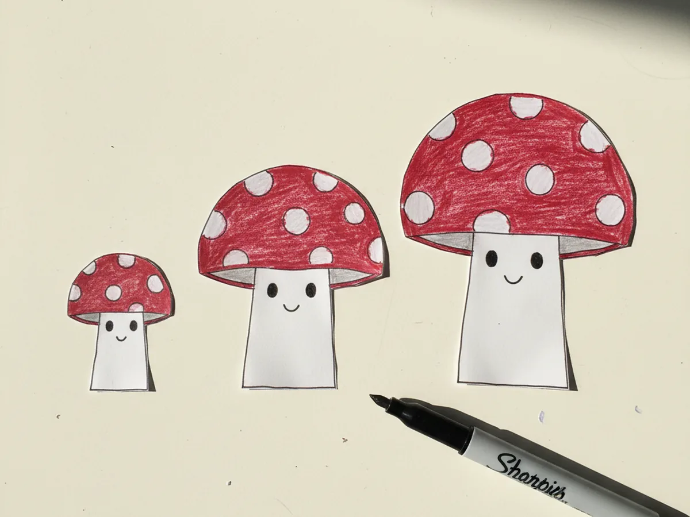
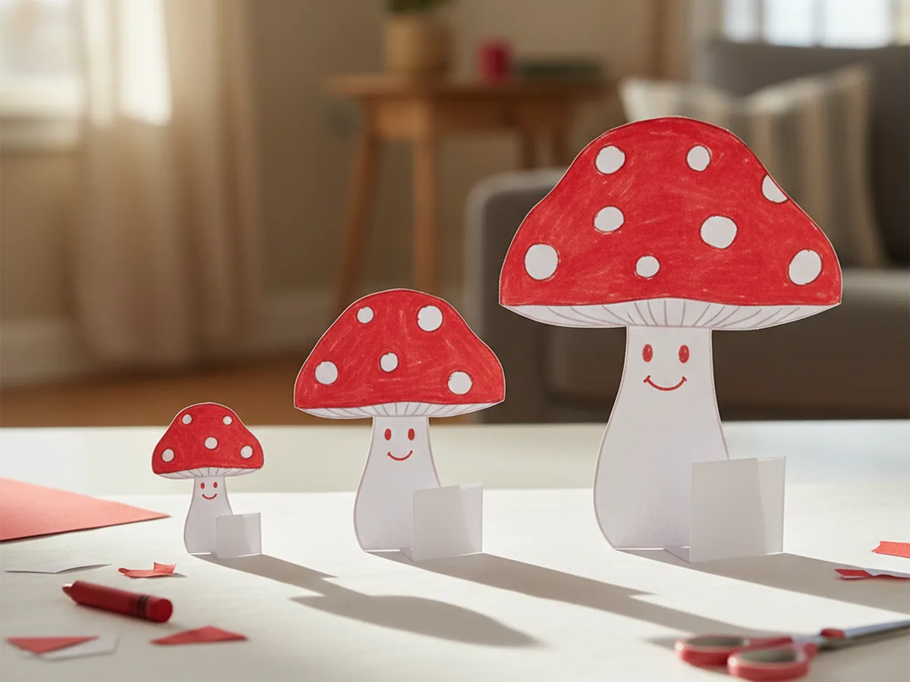
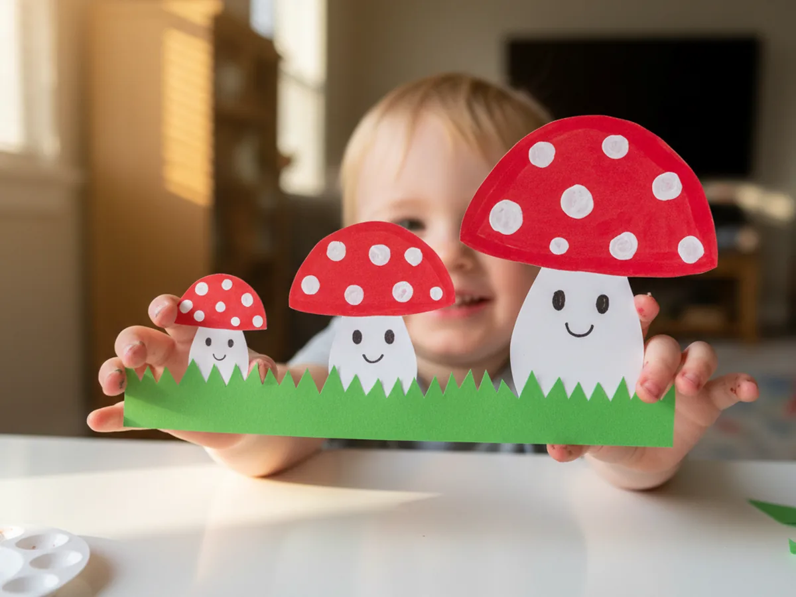

Tiny crafts have a sweet kind of magic. There is something about a small, perfectly made paper world that makes a child stare quietly and whisper "they are so cute." That is exactly the feeling we are going after with this gentle little miniature paper craft: a family of three tiny standing toadstool mushrooms with red dotted caps and the smallest little smiling faces. The whole thing fits in the palm of a hand and takes about forty minutes from start to finish. 🍄
The reason this tiny paper craft works so well with young children is that every shape is gentle, simple, and forgiving. A red dome cap, a white stem, a few white paint dots, and a tiny smile. My four year old made her own mushroom family on a quiet Sunday afternoon, and when the third mushroom finally stood up on its tab base, she clapped her hands and announced "they are a family." Those are the moments we sit down to craft for.
Why Kids Love This Craft
Children adore this miniature paper craft because it taps into the same wonder they feel for tiny things in the real world: a ladybug on a leaf, a snail shell, a smooth pebble in their pocket. Making a tiny mushroom family that can actually stand up feels like building a real little world. Each one becomes a friend with its own personality, and they will proudly march them across the kitchen counter to show grandma later that night.
This mini paper craft is also a gentle workout for fine motor skills. Cutting small shapes with kid scissors, gluing tiny pieces neatly, and dabbing precise dots with a paint marker all build the hand control needed for early writing. Folding the base tab so the mushroom stands adds a tiny problem solving moment that feels like real engineering to a young child.
Best of all, this cute miniature paper craft ends with three sweet little keepsakes that fit anywhere. Your child can stand them on their nightstand, give one to a sibling, or tuck the whole grass base inside a shoebox to make a tiny mushroom forest. That feeling of "I made this whole little family" is exactly what makes a small craft stay in a child's memory. 🌿

What You'll Need
Here is everything you need for this sweet miniature paper craft mushroom family. I always pre-cut a few small paper rectangles before starting so my little one can jump straight into the cutting and gluing without waiting around.
- Crayola Construction Paper, 240ct, 12 Assorted Colors, gives you the red, white, and green sheets you need for the mushroom caps, stems, and grass base.
- Fiskars 5 Inch Blunt Tip Kids Scissors (3 Pack), the right safe size for cutting tiny mushroom caps and small stem shapes.
- Elmer's Disappearing Purple Glue Sticks, washable and easy for tiny fingers to apply on small paper pieces.
- Sharpie Oil Based Paint Marker, Extra Fine, White, perfect for dabbing crisp white dots on the red mushroom caps.
- Crayola Broad Line Markers, 10 Classic Colors, ideal for drawing the tiny smiling faces and adding extra grass details.
- White Heavyweight Cardstock, 110 lb, 50 Sheets, optional for a sturdy base if you want the mushroom family to stand on a bright white surface.
- A pencil, for lightly sketching the small dome and stem shapes before cutting.
- A small bottle cap or coin, optional but helpful for tracing the tiny mushroom cap dome shapes.
Step-by-Step Instructions
This miniature paper craft walks through seven gentle steps that take you from cutting the first tiny dome to gluing the final mushroom onto its grass base. Take your time and let your child do as much of the cutting and gluing as they comfortably can.
Step 1: Cut the Three Red Mushroom Caps
Start with a sheet of red construction paper. Help your child trace three small dome shapes with a pencil, like little half circles, in three different sizes: a small one about the size of a quarter, a medium one a bit bigger, and a large one about the size of a bottle cap. A small bottle cap or coin makes tracing the curve easier than freehand. Cut each dome out carefully with kid scissors. Slightly wobbly edges only make this miniature paper craft look more handmade and adorable.

Step 2: Cut the Three White Mushroom Stems
Now grab a sheet of white construction paper. Sketch three small rectangle stem shapes, each one a bit narrower than its matching cap and about twice as tall as it is wide. Round the bottom corners gently with the scissors so each stem looks soft and chubby like a real toadstool. Make the stems three different heights to match the three cap sizes. A short stem for the small cap, a medium stem for the medium cap, and a tall stem for the large cap.

Step 3: Glue Each Cap onto Its Stem
Take the purple glue stick and swipe a little glue across the back of each red mushroom cap, near the flat bottom edge. Press each cap onto the very top of its matching white stem, letting the dome curve outward and overhang each side of the stem just a little. This little overhang is what gives a toadstool its classic chubby mushroom shape. Press for a few seconds so the glue grabs and your three tiny paper mushroom craft shapes are ready for decorating.

Step 4: Add the White Dots to Each Cap
Now uncap the white paint marker. Show your child how to gently press the tip onto the red cap to leave a small round white dot, then lift it cleanly. Add about five or six dots scattered across each red cap in a classic toadstool pattern, with a few bigger dots and a few smaller ones. Uneven dots actually look more charming and realistic. Let the dots dry for a minute before moving on so they do not smudge under little fingers.

Step 5: Draw a Tiny Smile on Each Stem
This is the moment your child's mushrooms turn into little friends. Take a fine black marker and very gently draw two small dot eyes near the top of each white stem, then a small curved smile under the eyes. Keep the faces tiny so they look sweet on such small paper. If your little one is still building marker control, let them choose where the eyes go and you can add the smile yourself. Once all three mushrooms have happy little faces, the family is officially adorable. 😊

Step 6: Fold a Tab So Each Mushroom Stands
To make this miniature paper craft stand up on its own, fold a small tab at the bottom of each white stem. Pinch about a half inch of the stem at the very bottom and fold it backward so it bends at a clean ninety degree angle. This little flap becomes the foot that lets each mushroom stand upright on a flat surface. Test each one on the table and bend the tab a little more if it tips over. Once all three stand on their own, you have a real little family of tiny standing mushrooms.

Step 7: Add the Green Grass Base
Last step. Cut a long strip of green construction paper, about an inch and a half tall and the length of your hand. Use the scissors to snip small pointed grass blades along the top edge so it looks like a tiny lawn. Lay the strip flat with the grass blades pointing up. Glue the small folded tab under each mushroom onto the green base, spacing them out so all three tiny toadstools sit happily side by side in a row. Press for a few seconds and your sweet miniature paper craft mushroom family is finished and ready to display. 🎉

Variations to Try
Tiny Paper Forest Scene: Instead of just three mushrooms on a grass strip, build a whole miniature world inside a small open shoebox. Add a few tiny paper trees, a folded paper rock or two, and even a small blue paper stream. The shoebox lid lifts off to reveal the hidden paper forest, which makes the craft feel like a sweet little secret world.
Miniature Paper Mushroom Garland: Make six or seven mushrooms instead of three, then skip the standing tabs. Punch a small hole through the top of each cap and string them along a piece of bakers twine to make a sweet little garland for a bedroom shelf or above a craft table.
Glow-in-the-Dark Toadstool Family: Use glow-in-the-dark stickers or glow paint dots on the red caps instead of regular white paint marker dots. After a sunny window charge, the tiny mushroom family glows softly at bedtime, which children find absolutely magical.
Final Thoughts
This miniature paper craft mushroom family is one of those gentle projects that takes almost no setup, leaves almost no mess, and gives the biggest happy smile when the last tiny mushroom finally stands up on its own. The cutting, the dotting, the careful drawing of three little smiles, every part of it unfolds at a calm pace that fits beautifully into a slow weekend morning or a quiet hour after lunch. Your child will remember the time the two of you made a whole tiny mushroom family out of paper side by side.
If your little one finishes their first paper toadstool family, save this article on Pinterest so other craft loving mamas can find it. Happy crafting!
More Crafts You'll Love
If your child loved this miniature paper craft project, they will adore these other warm, simple paper crafts too: